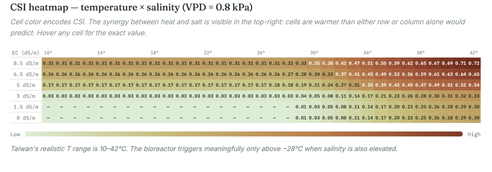
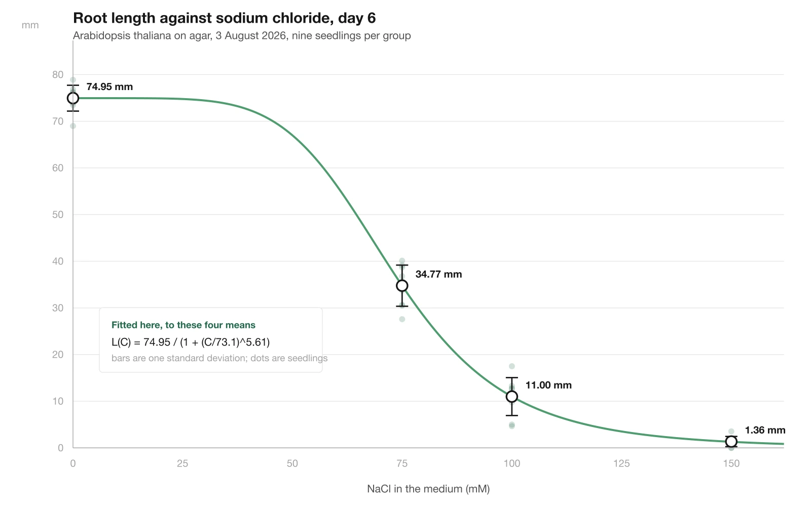
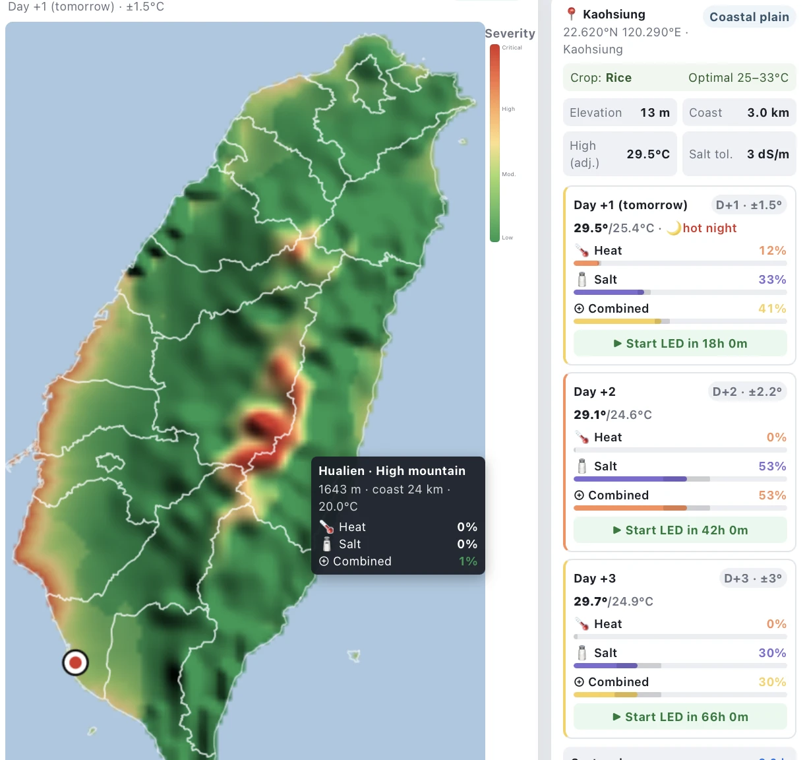
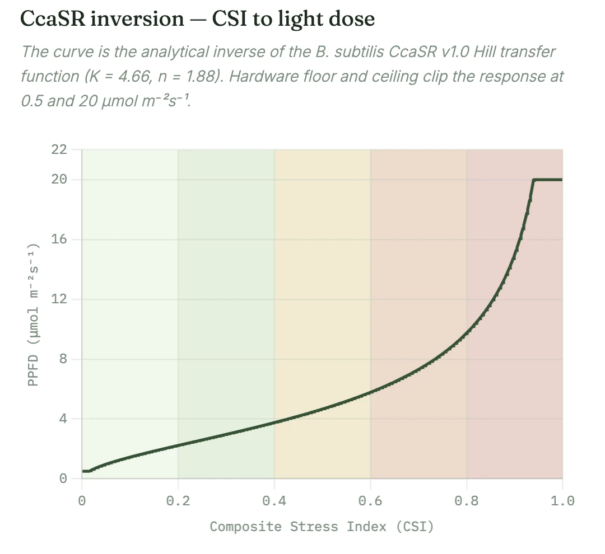
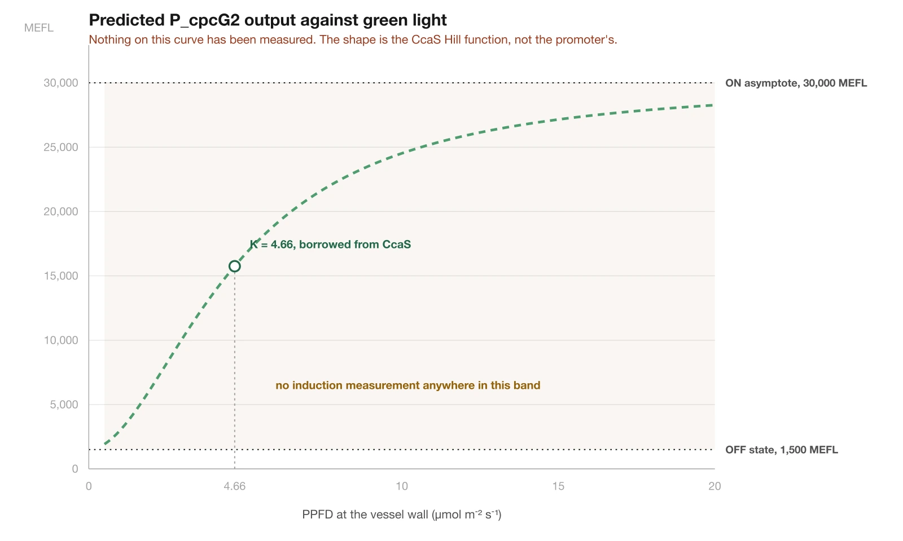
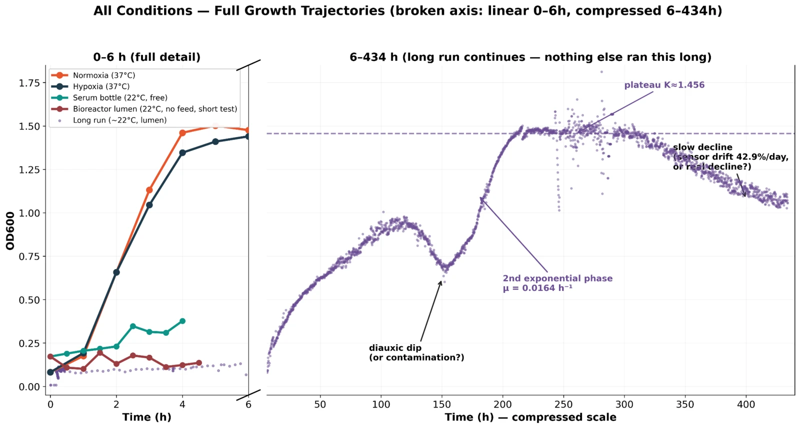
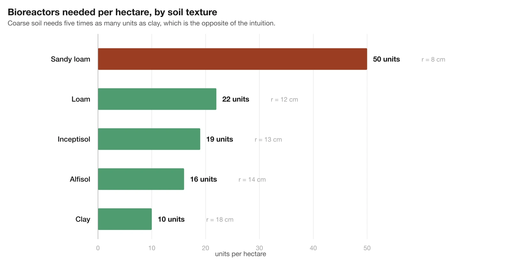

The model chain
ReLeaf puts an engineered Bacillus subtilis culture in a small reactor on the farm, shines green light on it when the crop is under stress, and collects what the culture secretes. Three questions decide whether that is worth building. How stressed is this field today? How much light does the reactor need, and how much enzyme comes back? And how many reactors does a hectare take. Each of those is a model, and each one hands a defined quantity to the next.
In temperature, soil EC, vapour pressure deficit
Out a single index, 0 to 1
In the stress index
Out photon flux, lux, predicted promoter output
In enzyme activity, soil texture
Out reactors per hectare
The vessel physics sits outside this page. What happens between the culture and the bottle, which is to say the hollow-fibre module, the wall shear, the critical flux and the two-compartment transient, is worked out in full in the team's reactor calculations (not currently published on the wiki) and is not repeated here.
Two things about this page are worth knowing before the equations start. The first is that one of these three models has been checked against a measurement we own, and the other two have not. The salt arm of the stress index is fitted to our nine-seedling dose ladder in section 3.3. Nothing in the optogenetics chain has been measured on our construct at all, which section 4.4 states plainly instead of burying. The second is that the numbers here do not become money. The chain stops at units per hectare, and section 5.6 says why.
The digital twin covers the same reactor from the control side, with its own register of what is calibrated and what is validated. Where a parameter appears on both pages, this one cites it and does not restate it.
Assumptions
Every step of this chain crosses a boundary where a full mechanistic description would need parameters that do not exist for our system. The approximations are listed here, before any equations, so a result can be traced back to the approximation responsible for it. They are numbered, and the sections below refer to them by number.
| Where | What we assumed | Standing | |
|---|---|---|---|
| A1 | Stress index | Heat, salt and humidity stress combine additively, with one interaction term for heat against salt and none for the other two pairs. | Assumed |
| A2 | Stress index | Where no soil probe is installed, electrical conductivity can be estimated from coastal distance, elevation and a forecast water-deficit term. | Assumed |
| A3 | Stress index | Air temperature at a field is the inverse-distance-weighted mean of 19 county anchors, corrected at 6.5 °C per kilometre of elevation. | Standard lapse rate |
| A4 | Optogenetics | The composite stress index can stand in for the target fractional activation of the circuit, so that inverting the light response gives the dose to apply. | Assumed |
| A5 | Optogenetics | PcpcG2 follows the same Hill shape as the CcaS sensor upstream of it, with the same K and the same n. | Assumed, and untested |
| A6 | Optogenetics | Constitutive expression of CcaS and CcaR leaves K and n where the published chemically induced system put them. | Assumed, and unlikely |
| A7 | GIS | Soil is homogeneous within a texture class, with one porosity, one permeability and one dispersivity per class. | Assumed |
| A8 | GIS | Root-zone concentration decays to a tenth of peak over one 48 to 72 hour irrigation cycle. | Placeholder |
| A9 | GIS | Each reactor's coverage area tiles a hectare without overlap and without a packing margin. | Simplification |
A5 and A6 carry most of the remaining uncertainty, and they sit in the same place: the light switch. A4 is a modelling convenience with no mechanism behind it, because there is no reason a stress index on an arbitrary scale should map onto fractional promoter activation one for one. It is on the page because the alternative, which would be a dose-response curve from stress to required enzyme, needs a plant experiment nobody has run.
Stress index
Taiwan's summers push past 35 °C routinely, and coastal farmland takes salinity from sea-level rise and from irrigation drawdown. Neither of those alone tells a reactor what to do. The Composite Stress Index takes three field measurements and returns one value between 0 and 1, and everything downstream follows from it: how bright the light runs, how much enzyme the culture makes, how much reaches a plant.
Inputs
Temperature, in degrees Celsius, comes from the Central Weather Administration through the Open-Meteo ECMWF forecast [5]. We pull daily maximum and minimum at 2 m for D+1 to D+3 at 19 county anchors, interpolate to the field by inverse-distance weighting with a power of 4, then correct both the anchor and the target for elevation at 6.5 °C per kilometre.
Electrical conductivity, in decisiemens per metre, is the salinity proxy. A field with a soil probe uses the probe. A field without one gets an estimate from coastal distance, terrain elevation and a water-deficit term off the same forecast. This is the weakest input in the model, and it is the one we most want to replace with a reading.
Vapour pressure deficit, in kilopascals, is computed from forecast temperature and the FAO reference evapotranspiration in the forecast output [6]. No sensor measures it in the current build.
The index
Each input becomes a sub-score between 0 and 1 through a Hill function on the amount by which it exceeds a crop-specific threshold. Below the threshold the sub-score is zero, which is what keeps the reactor off on an ordinary day.
XS = max(0, EC − EC0) sS = XSnS / (KSnS + XSnS)
XH = |VPD − VPD0| sH = XHnH / (KHnH + XHnH) The thresholds T0, EC0 and VPD0 are crop-specific and come from the eight crop profiles in the interface. The six Hill constants are not written down anywhere in our sources; see fix M2.
The last term earns its place. At 40 °C with EC at 8.5 dS/m, adding heat and salt independently gives an index of 0.63. With the interaction term it comes out at 0.74. That 0.11 is entirely the product term, and it goes in the direction the literature on combined stress reports, where the damage from heat and salt together exceeds the sum of the two alone.
We swept the index across every realistic combination for Taiwan: temperature from 10 to 42 °C, six conductivity levels from fresh to strongly saline, five levels of vapour pressure deficit. That is 990 scenarios. Eighty-five per cent of them come in below 0.4. Fifty-five of them, 5.5 per cent, reach the high band. The highest value anywhere in the sweep is 0.77, at 42 °C, 8.5 dS/m and 2.8 kPa. The index never saturates, which was the design intent, because an index that pins at 1 under ordinary Taiwanese summer conditions cannot tell a bad day from a catastrophe.

Fit to the salt ladder
The salinity arm is the only part of this model with our own dose response behind it. On 3 August we measured root length in Arabidopsis thaliana on agar at four salt levels, six days after transfer, nine seedlings in every group. The means are 74.95, 34.77, 11.00 and 1.36 mm at 0, 75, 100 and 150 mM NaCl, with standard deviations of 2.77, 4.41, 4.07 and 1.09.
Fitting a Hill decline to those four means gives a curve with a half-effect at 73.1 mM and a slope of 5.61. What makes the fit worth reporting is not the residual, because two free parameters against four points guarantees a small one. It is that the slope comes out the same whichever pair of points you take it from: 5.62 from the 75 and 100 mM pair, 5.49 from 100 and 150, 5.54 from 75 and 150. A dose response that is internally consistent to two decimal places across three independent pairs is telling us something about the plant.

build/model_figures.py.A slope near 5.6 is steep. It means the salinity arm of the stress index should be a near-switch and not a ramp: below about 60 mM the plant barely registers the salt, and by 100 mM it has lost seven eighths of its root. If the index's salinity term turns on gently, it will call for light long before the crop needs it, and it will keep calling at the same level long after the crop is past saving. That is the single clearest thing our own data says to this model.
Forecast across Taiwan
A reactor cannot wait for stress to arrive, because the culture needs time to grow and produce after it is switched on. So the same equations run over all 346 farming townships on a three-day forecast, and flag the ones that need switching on before the event. The other job this does is geographic. Taiwan drops from above 3,000 m to sea level inside a few kilometres, so a raw station reading means little at a field until it has been interpolated and corrected for elevation.
The farmer enters two things: where the field is, and what is growing on it, from eight crop profiles. Each crop carries its own heat onset, severe-heat threshold, cold onset and salt tolerance, so the score that comes back is specific to whatever is growing in that field. Three patterns hold across the whole island. The south scores highest in summer, on heat and coastal salinity together. The west coast plains, Changhua, Yunlin and Chiayi, carry the highest year-round salinity exposure. Mountain counties stay low even in August, because the elevation correction takes their effective temperature down with them.

The climate layers this runs over, and the parcel and township geometry underneath them, are documented on Geospatial Analysis, which also states the limits of that data. Those limits apply here without restatement.
- Three field variables can be reduced to one actionable number, with a stated functional form and stated weights.
- The index does not saturate anywhere in Taiwan's realistic agricultural range; the worst case in 990 scenarios is 0.77.
- Root elongation in our salt ladder falls with a Hill slope near 5.6 and a half-effect near 73 mM NaCl.
- That the weights in equation (4) are correct. They were chosen, not fitted, and nothing has tested them.
- That the index predicts yield loss, or damage, or anything a farmer can check. It has never been compared against a measured outcome in a field.
- That the conductivity estimate for a field without a probe is any good. Assumption A2 has no validation behind it.
Optogenetics kinetics
This section folds two of the original five models together. Sensing to light dose and light dose to protein are one transfer function with a unit conversion in the middle, and splitting them across two sections would have hidden the fact that the same two borrowed constants, K and n, carry the whole chain.
From stress to light dose
The CcaSR system responds to green light with a Hill-type curve. If we treat the stress index as the fractional activation we want (assumption A4), the required photon flux is that curve run backwards, then clipped to what the hardware can actually do.
The conversion to lux exists for a practical reason. LED datasheets report lux, and without equation (7) somebody has to do the conversion by hand every time the hardware is specified, which is where mistakes get made.
Three things fall out of the inversion. The system never saturates under Taiwanese conditions: the worst index in the sweep, 0.77, asks for 8.8 µmol m−2 s−1, or 1,091 lux, against a ceiling of 20. The half-activation point sits in the middle of the range, so at an index of 0.5 the required flux is exactly K, and the system is most sensitive to changes in stress between roughly 0.4 and 0.6, which is where most of Taiwan's marginal days land. And below about 0.15 the dose clips to the floor of 0.5, deliberately, because the circuit leaks in the dark and a dose below the leak is indistinguishable from no dose.

Promoter output
The light dose has to become protein. The content document models PcpcG2 output as a Hill curve anchored at an off state of 1,500 MEFL and an on state of 30,000, with the shape taken wholesale from the CcaS sensor upstream.

build/model_figures.py.One wet-lab measurement would change the standing of this whole section. A single intermediate light level, anywhere between the floor and the ceiling, would say whether the promoter saturates where the sensor does, or earlier, or later. Until that exists, equation (8) is the model's best guess at promoter behaviour and should be read as one.
Growth in the vessel
Nothing is produced by a culture that has not grown. Biomass is modelled as double Monod on two limiting nutrients, which is the smallest model that can produce the two exponential phases we actually observed.
μ(S1, S2) = μmax · S1/(KS1 + S1) · S2/(KS2 + S2)
dSi/dt = −(1/Yi) dX/dt Fitted against our own runs. The single-nutrient logistic form the reactor pages use is in the team's reactor calculations (not currently published on the wiki), with μmax = 1.31 h−1 and Xmax = 1.54 OD600 from the 37 °C refit.

Four readings come out of this, and only the first is comfortable. Temperature dominates everything, so the 37 °C curves are reference points and not operational predictions; the reactor runs near 22 °C in a field. The lumen condition, which is the one that matters, makes almost no biomass in the early hours without active feeding, and therefore almost no protein, whatever the light is doing. The long run shows two exponential phases, 0.0318 h−1 then 0.0164 h−1, split by a dip around 150 h, which is what diauxic growth on two sequential carbon sources looks like and is also what contamination looks like. And the model cannot settle the one question an operator would ask, which is whether to pre-culture the reactor before it goes out, because that is an operational decision and not a parameter.
Growth is fitted at 37 °C for a reason the Software page gives: one reactor batch at 22 °C runs about eighteen days, so the validation experiment is a shake flask at 37 °C and its result holds for flask conditions only. Nothing on this page upgrades that.
The missing induction curve
This is the sentence the section exists to make plainly. There is no induction curve. Nothing in the project's data shows PcpcG2 output changing with green light, at any intensity, on any date. Equations (6), (7) and (8) are calibrated on two published constants and on their own internal consistency, and on nothing we measured.
Three separate consequences follow, and they are worth separating because they have different fixes.
The constants are from a different construct. K and n were measured in a system where CcaS and CcaR sat under chemically inducible promoters, so their levels could be tuned. Ours are constitutive, which fixes those levels somewhere else. Change the expression level of a two-component system and you change the effective half-point and the effective cooperativity of the whole circuit (assumption A6). The light dose equation (6) prescribes would then produce a different expression level than the one intended, and the model would have no way of knowing.
The shape is borrowed twice over. Equation (8) assumes the promoter inherits the sensor's Hill parameters. There is no mechanism guaranteeing that. A promoter can be steeper than its sensor, shallower, or shifted, and the difference matters most in exactly the band the reactor would operate in.
The reactor's response is dead-time dominated anyway. The 105.1 ± 1.5 minute activation half-time [1] is an order of magnitude longer than the loop's other time constants, which the team's reactor calculations (not currently published on the wiki) work out in full. Whatever the steady-state curve turns out to be, the control problem is a slow one, and the forecast in section 3.4 exists because of it.
One experiment closes most of this: a dose response on the finished construct at three or four light levels between 0.5 and 20 µmol m−2 s−1, read as fluorescence. It should be the first thing the wet lab runs on the strain after assembly is confirmed. It is also the experiment that would let this section stop hedging.
- A defensible route from a stress index to a hardware-ready light specification in lux, with every constant written out.
- That the LED range chosen, 0.5 to 20 µmol m−2 s−1, covers Taiwan's whole realistic stress range with headroom.
- Growth trajectories in five conditions, measured by us, including a 434-hour run.
- Any statement about how our promoter actually responds to light. No measurement of that exists.
- That K = 4.66 and n = 1.88 apply to our circuit. The published values came from a differently regulated construct.
- A protectant titre. Equation (8) is in fluorescence units, and nothing converts those to milligrams per litre of enzyme.
GIS economic impact
Deploying a reactor into a field starts with one number: how many units does a hectare take? Five stages get there, each turning a wet-lab or literature input into the next stage's assumption. The answer changes by a factor of five depending on the soil, and it changes in the direction almost nobody expects.
Enzyme activity target
The field-standard screening cutoff for ACC deaminase is 20 nmol mg−1 h−1 [3]. That threshold exists to decide whether an isolate has the enzyme at all, and it says nothing about whether the activity is enough to protect a plant. Strains demonstrated to confer salinity protection in planta report specific activities of 1,589 to 1,677 nmol mg−1 h−1 [4], so the design target is set at the midpoint of that range, 1,600, which is 1.6 µmol mg−1 h−1. That is an eightyfold higher bar than the screening cutoff, and using the cutoff as a design target would have understated what the system needs by that factor.
Volumetric activity
What a litre of culture does in an hour is how active each molecule is times how many molecules there are. Keeping those two apart matters, because one is a protein engineering problem and the other is a fermentation problem, and they are fixed by different people.
The titre is the weak link, and it is weak downward, which is the useful direction. Three scenarios were run: the conservative 5.4 mg/L used downstream, a moderate 50 mg/L giving about 80 µmol L−1 h−1, and an optimised 500 mg/L giving about 800. Even the optimised case sits well under the published ceiling for optimised B. subtilis secretion. So every figure below is an upper bound on how many reactors a hectare needs, and a lower bound on what one reactor covers. Real production will very likely need fewer units than this page states.
Coverage threshold
Coverage has to be defined by a concentration, not by presence. The protectant is present at any distance if you look hard enough; the question is where it stops doing anything. The model sets that floor at 0.1 mg/L of ACC deaminase protein in the bulk root zone, and uses it as the stopping condition when solving the transport equation for a radius. The number is a placeholder. There is no in-house dose response for protectant concentration against plant outcome, and there is no published one for our protein in our soil, so 0.1 is a working value and is labelled that way in section 6.
Coverage by soil type
Transport through soil is three processes competing. Bulk flow carries the protectant, dispersion and molecular diffusion spread it, and adsorption, degradation and plant uptake remove it. Which one dominates decides whether the plume is narrow and deep or wide and shallow, and that decides the radius.
| Soil | Porosity φ | Permeability κ (cm²) | Deff (cm²/s) | αL (cm) | PeL | Radius (cm) | Area (m²) |
|---|---|---|---|---|---|---|---|
| Sandy loam | 0.38 | 8.5 × 10−5 | 8.0 × 10−6 | 3.0 | ~8 | 8 | 0.20 |
| Loam | 0.42 | 5.0 × 10−5 | 5.0 × 10−6 | 4.5 | ~15 | 12 | 0.45 |
| Inceptisol | 0.45 | 4.0 × 10−5 | 4.0 × 10−6 | 4.0 | ~18 | 13 | 0.53 |
| Alfisol | 0.40 | 1.2 × 10−5 | 3.0 × 10−6 | 3.5 | ~25 | 14 | 0.62 |
| Clay | 0.48 | 2.0 × 10−6 | 1.0 × 10−6 | 2.0 | ~75 | 18 | 1.02 |
Every value in the first five columns is literature-derived for a texture class and none has been measured on a Taiwanese field. The radius is where bulk concentration falls to 0.1 mg/L under assumption A8.
The result inverts the intuition. Sandy loam, the most permeable soil in the table, gives the smallest radius. Advection dominates there, so the protectant is pulled downward before it can spread sideways, and the plume comes out narrow and deep. Clay does the reverse: flow is four orders of magnitude slower, so diffusion has time to work laterally, and the plume comes out wide and shallow. The Péclet numbers in the table look like they say the opposite, with clay at 75 against sandy loam at 8, but a Péclet number is a ratio and not a rate. Clay's advection beats its diffusion, and both are slow.
Units per hectare

build/model_figures.py.That fivefold spread is the model's most useful output, because it is a siting rule rather than a cost. A hectare of clay in Yunlin and a hectare of sandy loam in Taitung are not the same deployment problem, and a pilot that ignores texture will look like a success or a failure depending on where it happened to land. The layer this joins against, the 詳測土壤圖 detailed soil survey, is documented with its edition and publisher on Geospatial Analysis, alongside the 2,792,536 farmland parcels and 346 township demand nodes the deployment count is computed over.
The costing step
The content document takes one more step, multiplying units per hectare by a unit cost of NT$30,000 and cross-referencing guaranteed paddy prices to get cost per county. That step is not on this page, and the reason is not modesty.
There is no agreed unit cost. The Entrepreneurship page carries an estimated price of NT$60,000 per reactor from the business plan, which is twice the figure used here, and it carries an open fix of its own stating that the affordability language stays off every page until a bill of materials with a currency and a date exists. The Software page makes the same refusal from the other side: it declines to state a reactor cost because no bill of materials total exists. Publishing a cost per county on this page would put a third number into a conflict that already has two.
- A traceable chain from enzyme specific activity to reactors per hectare, with every stage's assumption written down.
- That soil texture changes deployment density fivefold, and in the counterintuitive direction.
- That the figures are conservative, because the titre used is the lowest of three scenarios.
- Any cost, in any currency. See fix M7.
- That 0.1 mg/L is the right effectiveness threshold. It is a placeholder with no dose response behind it.
- That the soil parameters describe Taiwanese fields. They are textbook values for texture classes.
Parameters
Every parameter the three models use, with where it came from. Three provenances and no fourth: Ours means we measured it, Literature means a named paper or public dataset, Assumed means somebody chose it. An assumed parameter is marked assumed in this table, not in a footnote.
| Symbol | Meaning | Value | Unit | Provenance |
|---|---|---|---|---|
| wT, wS | Weight on the heat and salt sub-scores | 0.35 | – | Assumed chosen, never fitted |
| wH | Weight on the humidity sub-score | 0.15 | – | Assumed chosen, never fitted |
| wTS | Weight on the heat–salt interaction | 0.15 | – | Assumed chosen, never fitted |
| T0, EC0, VPD0 | Stress onset thresholds, per crop | not on record | °C, dS/m, kPa | Literature crop profiles; values missing, fix M2 |
| KT, KS, KH | Half-effect points of the three sub-scores | not on record | °C, dS/m, kPa | Assumed fix M2 |
| nT, nS, nH | Hill exponents of the three sub-scores | not on record | – | Assumed fix M2 |
| Γlapse | Elevation temperature correction | 6.5 | °C/km | Literature standard atmosphere |
| pIDW | Inverse-distance weighting power, 19 anchors | 4 | – | Assumed chosen for smoothness |
| L0 | Control root length, day 6 | 74.95 ± 2.77 | mm | Ours 3 Aug 2026, n = 9 |
| KNaCl | Half-effect salt concentration, root elongation | 73.1 | mM | Ours fitted, equation (5) |
| nNaCl | Hill slope, root elongation against salt | 5.61 | – | Ours fitted, equation (5) |
| K | CcaSR half-activation photon flux | 4.66 | µmol m−2 s−1 | Literature [1, 2], attribution disputed, fix M5 |
| n | CcaSR Hill exponent | 1.88 | – | Literature [1, 2], fix M5 |
| t1/2 | CcaSR activation half-time | 105.1 ± 1.5 | min | Literature [1], via the team's reactor calculations (not currently published on the wiki) |
| PPFDmin, PPFDmax | LED panel range | 0.5, 20 | µmol m−2 s−1 | Assumed panel designed, not built |
| klux | Photon flux to illuminance, 526 nm | 124 | lux per µmol m−2 s−1 | Literature photometric constants |
| Foff | PcpcG2 output in the dark | 1,500 | MEFL | Assumed claimed as measured, fix M4 |
| Fon | PcpcG2 saturated output | 30,000 | MEFL | Assumed claimed as measured, fix M4 |
| μ1, μ2 | The two exponential growth rates, 22 °C long run | 0.0318, 0.0164 | h−1 | Ours 434 h run |
| KX | Carrying capacity, 22 °C long run | 1.456 | OD600 | Ours read after the sensor alarm, fix M6 |
| μmax, Xmax | Logistic growth, 37 °C refit | 1.31, 1.54 | h−1, OD600 | Ours 1 June refit, in the team's reactor calculations (not currently published on the wiki) |
| As | Target ACC deaminase specific activity | 1.6 | µmol mg−1 h−1 | Literature midpoint of [4] |
| Tp | Secreted protein titre | 5.4 | mg/L | Assumed placeholder, no in-house titre |
| Av | Volumetric activity | 8.64 | µmol L−1 h−1 | Assumed computed from an assumed titre |
| Cth | Minimum effective root-zone concentration | 0.1 | mg/L | Assumed placeholder, no dose response |
| φ, κ, Deff, αL | Soil transport parameters, five textures | see 5.4 | various | Literature texture-class values, none measured here |
| fdecay | Concentration decay over one irrigation cycle | 0.1 in 48–72 | fraction, h | Assumed assumption A8 |
| R | Coverage radius, by texture | 8 to 18 | cm | Assumed solved from assumed inputs |
Count them and the picture is clear enough. Six parameters are ours. Seven are from a paper or a public dataset. Fourteen were chosen, and three of those are not written down anywhere at all. A model with that ratio is a design tool, and this page treats it as one.
What the model changed
Four decisions came out of these three models and went back into the build.
The LED range. Inverting the transfer function before specifying hardware showed that the whole of Taiwan's realistic stress range asks for under 9 µmol m−2 s−1. The panel was specified to 20 instead of to a round hardware maximum, which left headroom without paying for brightness nobody would use. The floor at 0.5 was added for the opposite reason, once the model made it obvious that a dose below the circuit's dark leak carries no information.
Forecasting instead of reacting. The reactor's slowest time constant is the 105-minute activation half-time, and a cold culture at 22 °C adds far more delay than that on top. A controller that waits for stress to be measured would deliver protectant after the event. That is why section 3.4 runs on a three-day forecast and not on today's reading, and why the interface counts down to when the light should start instead of reporting a current state.
Pre-culturing became an operational requirement. Figure 6 shows the lumen at field temperature producing almost nothing for the first several hours. No light dose fixes that. The reactor has to go into the field with a grown culture, which is a deployment decision the model forced rather than a parameter it estimated.
Soil texture entered the siting rule. Before the transport model, deployment density was one number. After it, it is five numbers spanning a factor of five, running opposite to the intuition that free-draining soil is easier to treat. Any pilot now has to record its soil texture, or its result will not transfer anywhere.
One change landed in the wet lab. The salt ladder in section 3.3 is steep enough that the working range for the plant screen is narrow. Below 60 mM there is nothing to rescue because nothing is hurt; at 150 mM there is nothing to rescue because nothing is left. That is the same conclusion the Plants page reaches from the plates, arrived at here from the curve.
Not modelled
The original plan had five models. Three are on this page. The rest are listed here so that their absence is on the record as a decision.
| Not here | Why, and where it sits instead |
|---|---|
| Soil transport and root uptake | A three-dimensional advection-dispersion solve on a finite-volume mesh exists in the content document, with periodic lateral boundaries and gravity-driven Darcy flow. It is not written as a model here, for one reason: the protectant that would use it, AccD, acts on the leaf surface, and the two protectants that might act at the root zone, LEA14 and BoPep4, have never touched a plant. A root-uptake model for a protectant whose site of action is unestablished would be arithmetic about nothing. The same transport physics does appear, in reduced form, as equation (11), because the GIS coverage radius needs it. The wet lab has to establish site of action first. |
| Membrane transport | In the team's reactor calculations (not currently published on the wiki), in more detail than this page could carry, and with the 0.2 µm module, the sieving coefficient, the critical flux and the two-compartment transient all worked through against locked hardware. |
| Field delivery and spray dose | A foliar dose model exists in the content document, taking leaf area index and a seedling sensitivity factor to a recommended spray volume. Three of its parameters are undetermined, including the minimum effective dose the adequacy check compares against, so it has no threshold to test and cannot produce a pass or fail. It comes back when the wet lab has a leaf-surface half-life and a spray inoculation result. |
| ACC deaminase against ACC oxidase | Promised to this page by the team's reactor calculations (not currently published on the wiki) and not delivered. See fix M8. |
| Sensitivity analysis | Not run. With fourteen assumed parameters and three of them unrecorded, a sensitivity sweep would mostly measure how much the answer depends on numbers nobody has written down. Fix M2 comes first. |
References
- Castillo-Hair, S.M., Baerman, E.A., Fujita, M., Igoshin, O.A., Tabor, J.J. (2019) Optogenetic control of Bacillus subtilis gene expression. Nature Communications 10:3099. doi:10.1038/s41467-019-10906-6. Source of the 105.1 ± 1.5 min activation half-time cited in the team's reactor calculations (not currently published on the wiki), and the likely source of K and n.
- Ohlendorf, R. et al., cited in Math Model Content.docx as 2019 for K = 4.66 and n = 1.88 in B. subtilis CcaSR v1.0. No 2019 CcaSR paper by this author has been located. exact source needed See fix M5.
- Penrose, D.M., Glick, B.R. (2003) Methods for isolating and characterizing ACC deaminase-containing plant growth-promoting rhizobacteria. Physiologia Plantarum 118(1):10–15. Source of the 20 nmol mg−1 h−1 screening cutoff.
- Strains reported to confer effective in-plant salinity protection at 1,589 to 1,677 nmol mg−1 h−1 specific activity. The content document gives the range without naming the strains or the papers. exact source needed
- Open-Meteo ECMWF forecast API, serving Central Weather Administration (中央氣象署) data for Taiwan. open-meteo.com. Daily maximum and minimum 2 m temperature, precipitation and reference evapotranspiration, D+1 to D+3, at 19 county anchors.
- Allen, R.G., Pereira, L.S., Raes, D., Smith, M. (1998) Crop evapotranspiration: guidelines for computing crop water requirements. FAO Irrigation and Drainage Paper 56. The reference evapotranspiration the vapour pressure deficit is derived from.